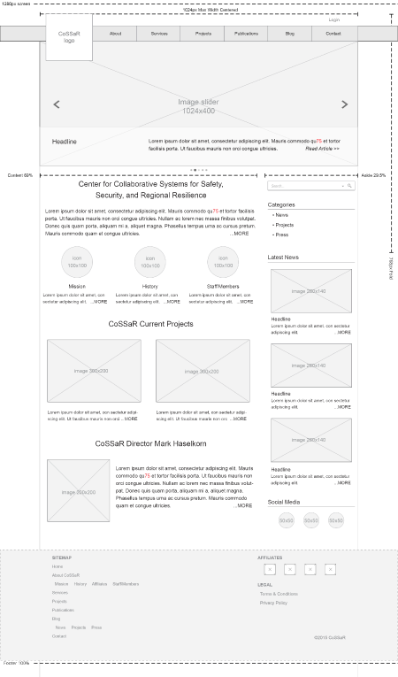
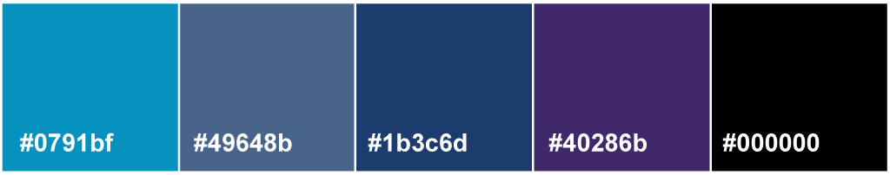
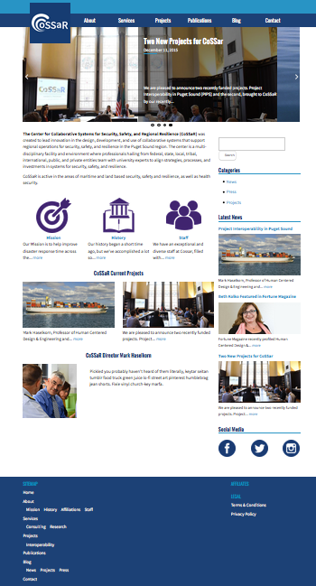

☰ MENU
- Info
- UX Analysis
- Styles
- Web Pages
CLIENT
Center of Collaborative Systems in Safety and Resiliance (CoSSar)
With group of 2 web designers and 2 web developers, we designed and built a responsive WordPress website for CoSSar. CoSSar is research lab facility that is apart of University of Washington and upon meeting the company, they only had a placeholder on the UW's website. A new thing I learned from this project was setting up my own Vagrant virtual machine (server) in order to work with a group that was mainly working in different areas of the city. Connecting CoSSar's Github with the virtual machine, made the project incredibly easy to have version control for our project.2015
SERVICES
- Web Design
- UX Design
- WordPress Integration
GITHUB >>
GITHUB WIKI w/ DELIVERABLES>>
UX ANALYSIS
User Experience was needed for the site. The client goal was for the user to go to the website for information and as a reference guide. We gathered information for a content audit, implementing a sitemap, and designing a set wireframes for the entire site.


STYLES
Being apart of University of Washington, CoSSar wanted to still be connected them through styles. They preferred a color scheme with blue and wanted to implemented with purple.
TEXT STYLES
Source Sans Pro
Oswald
WEB PAGES
HOME PAGE
DESTINATION PAGE